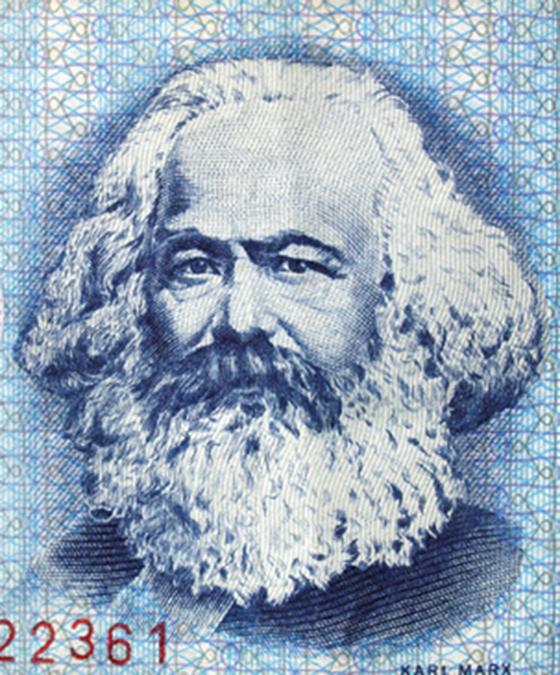
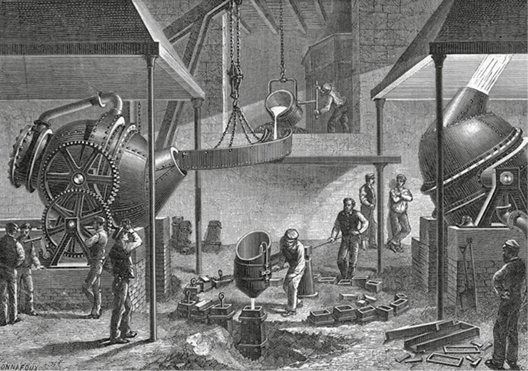
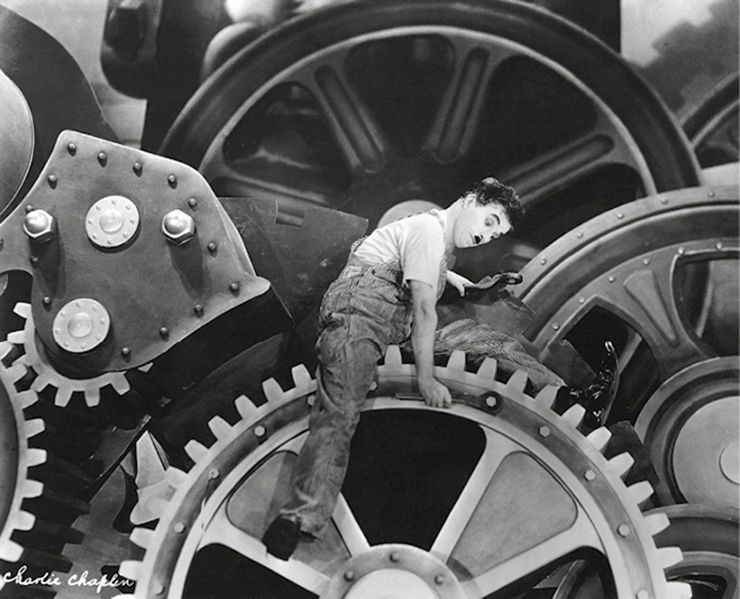
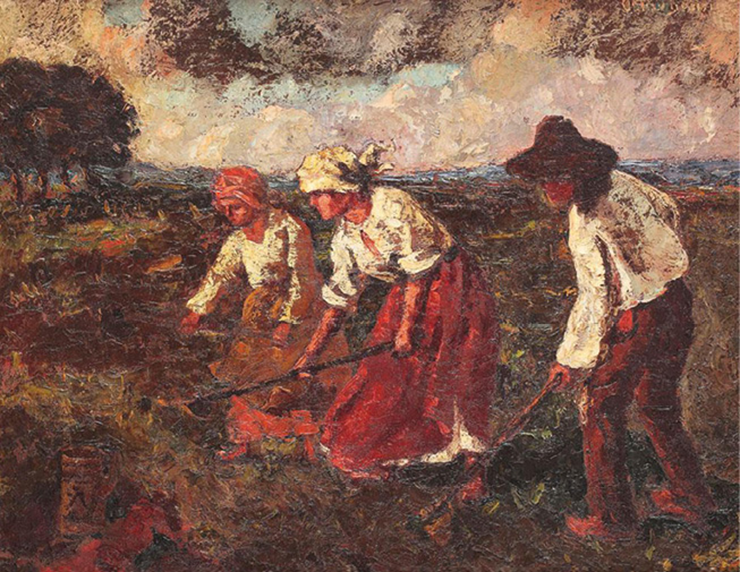
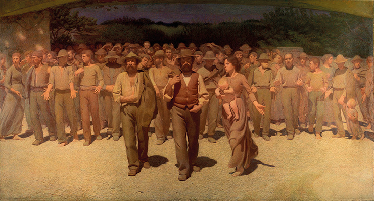

Leia o texto a seguir, do sociólogo e professor brasileiro Sebastião Vila Nova (1944-2018).
Todas as sociedades possuem explicações – mais ou menos próximas da realidade dos fatos, ostensivamente mitológicas ou pretensamente realistas – sobre o porquê das relações entre indivíduos, grupos e categorias sociais nelas consagradas como “normais”. A partir dos fins do século XVIII e, sobretudo, do século XIX, com o advento da revolução industrial e a instauração de um tipo de organização política baseada nos ideais igualitaristas, [...] um novo modo de ver o problema das desigualdades sociais [...] surge no pensamento ocidental. Segundo esse modo crescentemente secularizado de encarar a questão [...], é na própria sociedade, e não em presumíveis fatores biológicos, ou no plano sobrenatural, que se deve buscar a origem de tais desigualdades.
VILA NOVA, Sebastião. Introdução à sociologia. 6. ed. São Paulo: Atlas, 2016. p. 151.
Neste capítulo, serão abordadas as habilidades EM13CHS101, EM13CHS401 e EM13CHS404.
Origens do pensamento de Karl Marx
É importante observar (e você verá isso ao longo de todo o capítulo) que Marx procura conciliar reflexão e prática, ou, em outras palavras, teoria e práxis. No marxismo, práxis é compreendida como as ações humanas, que geram transformações no mundo.
O pensamento sociológico de Karl Marx se forma a partir do contato com premissas de outros teóricos bem como das críticas que esse lhes faz. Dentre esses teóricos, destacam-se o filósofo alemão Hegel, os economistas clássicos e os sociólogos que ficariam conhecidos como “utópicos”.
Marx herda de Hegel (1770-1831) o conceito de dialética, uma teoria sobre a realidade, segundo a qual esta se encontra em constante transformação. Tal transformação se realiza por meio de uma contradição entre polos opostos. Marx sente a necessidade de rever essa concepção sobre o mundo. O hegelianismo entendia que instituições que existiam nas sociedades das diversas épocas seriam fruto do desenvolvimento de ideias pautadas pela razão, o que legitimaria a ordem e a organização social existentes. No entanto, para Marx, a ordem social em geral não estaria propriamente legitimada pelas ideias, seria apenas fruto de determinados confrontos sociais próprios de estágios específicos da história.
Quanto aos economistas clássicos, como David Ricardo (1772-1823) e Adam Smith (1723-1790), o sociólogo alemão se baseou bem como continuou a análise deles, sobretudo com relação ao conceito de valor de uma mercadoria. Tanto para Marx como para esses economistas ingleses, o valor de determinada mercadoria resulta da quantidade de tempo de trabalho aplicada. Marx acrescenta a essa concepção novos elementos, perspectivas e críticas: seria necessário não apenas analisar as mercadorias isoladamente, mas também considerar as relações entre pessoas e entre classes que as produzem. Além disso, para Marx, as leis econômicas seriam resultado de uma série de relações processadas durante a história, e não propriamente leis imutáveis que sempre existiram e existirão de uma mesma maneira. A propriedade privada, por exemplo, não seria uma lei eterna, mas uma característica de determinada sociedade em determinada época.
Segundo Karl Marx, instituições econômicas, como propriedade privada ou herança, por exemplo, não são leis necessariamente permanentes, mas realidades situadas em contextos socioeconômicos; portanto, sujeitas a mudanças.
Akabei/iStockphoto.com
Marx também reconhecia e analisava o trabalho de nomes do que chamava de socialismo utópico, tal como Saint-Simon (1760-1825) e Charles Fourier (1772-1837), teóricos da primeira metade do século XIX. Segundo Marx, ainda que essas teorias tivessem seu valor, faltou a elas a ideia de antagonismo das classes sociais, condição essencial para que a proposta socialista fosse posta realmente em prática.
Quem detém e quem não detém os meios de produção é o critério fundamental por meio do qual Marx identifica as duas principais classes do sistema capitalista.
Burgueses são os donos dos meios de produção que mais caracterizam o capitalismo à época de Marx: as fábricas. O termo pelo qual são designados provém do latim burgus, uma referência às fortalezas medievais.
Os proletários, por sua vez, não são donos dos meios de produção, mas apenas de sua própria força de trabalho. Esse termo tem origem no latim proles, que significa “filho, descendência”. Originalmente, entre os romanos antigos, o proletarius, pertencente à classe social mais baixa, era o indivíduo que não pagava impostos e cuja “utilidade” considerada residia apenas nos filhos que gerava.
O que os chamados “socialistas utópicos” propunham, na verdade, era a entrega pacífica e voluntária dos meios de produção de mercadorias e produtos por meio de uma conscientização moral dos problemas sociais por parte, sobretudo, daqueles que dispunham de mais. Uma vez conscientes dos sofrimentos dos outros, os meios de produção e seus produtos seriam socializados, isto é, distribuídos igualitariamente. Porém, pergunta Marx, como seria possível isso? Os utópicos não conseguiram, ao mesmo tempo que criticavam o sistema capitalista, apontar para uma saída viável para esse problema.
A seguir, veremos as principais teorias desenvolvidas pelo pensamento marxista.
Mecanismos capitalistas e alienação do trabalho
Vivendo no berço da Revolução Industrial, a capital inglesa, Londres, Karl Marx pôde encontrar ali um contexto que lhe permitisse analisar o capitalismo em seu estado mais avançado na época. Para ele, esse modo de produção surgiu com a acumulação de capital iniciada, na Idade Moderna, com a ampliação das relações comerciais da Europa com áreas de colonização pelo mundo. Com isso, o sistema de exploração modificou-se; a exploração que caracterizaria o regime feudal teria se transformado na exploração praticada pelo capitalismo.
Karl Marx formulou seu pensamento a partir da análise das condições socioeconômicas de sua época.
claudiodivizia/iStockphoto.com
Em seus estudos, Marx expôs que, ainda no século XVI, as estruturas sociais predominantes na Europa eram feudais; entretanto, com o comércio mundial alcançando novas e maiores proporções, as antigas classes transformaram-se, dando origem a novas. O enriquecimento dos comerciantes levou à formação de uma classe burguesa ou capitalista, detentora dos meios de produção. Já os antigos servos feudais, agora desvinculados das terras e de todos os meios de produção, dariam lugar aos proletários, a classe operária, que, em troca de uma remuneração em dinheiro (salário), venderia sua força de trabalho, identificada como uma mercadoria.
O desenvolvimento tecnológico que marcaria a Revolução Industrial, a partir da segunda metade do século XVIII, na Inglaterra, e posteriormente em outros países, teria levado ao estabelecimento dessas duas classes principais e antagônicas: burgueses e proletários. Assim, Marx sintetiza sua concepção de capitalismo como um sistema econômico e modo de produção assentado na legitimidade da propriedade privada e na liberdade comercial e industrial, tendo como maior propósito a geração de lucro.
Mencionamos venda de força do trabalho. Que perspectiva sobre o ser humano seria possível esperar nesse contexto analisado por Marx? Os humanos seriam seres que iriam se realizar transformando o mundo a partir do seu trabalho e de seus projetos. Para Marx, o que se via eram pessoas expropriadas de seu valor humano, em razão da expropriação do próprio trabalho.
Vejamos o que ele escreve em sua obra mais importante, O capital, publicação de 1867:
[...] Uma aranha executa operações semelhantes às do tecelão, e a abelha envergonha mais de um arquiteto humano com a construção dos favos de suas colmeias. Mas o que distingue, de antemão, o pior arquiteto da melhor abelha é que ele construiu o favo em sua cabeça, antes de construí-lo em cera. No fim do processo de trabalho obtém-se um resultado que já no início deste existiu na imaginação do trabalhador, e portanto idealmente. Ele não apenas efetua uma transformação da forma da matéria natural; realiza, ao mesmo tempo, na matéria natural seu objetivo [...]. [...] Além do esforço dos órgãos que trabalham, é exigida a vontade orientada a um fim [...]
MARX, Karl. O capital: crítica da economia política. Regis Barbosa e Flávio R. Koethe (Trad.). São Paulo: Nova Cultural, 1996. p. 298.
Em outras palavras, Marx considera que as pessoas podem viver e realizar-se enquanto humanas, humanizando a natureza e o mundo de acordo com as necessidades, ao lado de outras pessoas, por meio do trabalho. Essa perspectiva de transformação, baseada em planejamentos e finalidades, seria uma das principais distinções entre o trabalho humano e o de outras espécies do reino animal. Porém, essa dimensão do trabalho não seria mais verificável no sistema capitalista, pois o que se via era o trabalho pelo trabalho, visando tão somente à subsistência.
O sociólogo alemão chama esse processo de alienação do trabalho. Os proletários se tornavam estranhos, alheios aos resultados de sua própria atividade e, consequentemente, alheios a si mesmos. Aquilo que eles produziam passava a adquirir uma existência alheia aos seus interesses, servindo ao enriquecimento dos que possuíam os meios de produção. Eles não tinham necessariamente acesso ao que produziam, o que formava um mundo de objetos independentes, diante dos quais aqueles se viam como impotentes e como apenas servidores.
Um processo de produção em massa de aço, em indústria de Sheffield, na Inglaterra. Gravura de 1888. Para Marx, os operários, no contexto europeu da época, viviam uma situação de alienação do seu próprio trabalho.
Universal History Archive/UIG/Bridgeman Images/Easypix Brasil
Nesse contexto de produção fabril, os proletários realizavam uma atividade apenas mecânica e não intelectual, ficando, portanto, alheios a um trabalho verdadeiramente humano, que unisse dimensões intelectuais e manuais. Nesse mesmo sistema, o trabalhador apenas realizava uma parte do processo do trabalho (observe a gravura abaixo), ficando literalmente alheio ao produto final. Além disso, seu salário servia apenas para garantir a própria subsistência e continuar trabalhando – acabava não vendo os frutos de sua atividade, de modo que passava a viver para trabalhar.
Uma das popularizadas cenas do filme Tempos modernos: o ser humano como parte das engrenagens, símbolo da desumanização do trabalho.
Max Munn Autrey/Chaplin/United Artists/Kobal/Shutterstock
Concepção materialista e dialética da história
Concebido em um ambiente de efervescências e transformações econômicas, o pensamento de Marx trouxe uma nova forma de visão sobre a história e as relações humanas: toda sociedade estaria assentada nas condições materiais para sua existência, ou seja, estaria baseada na economia.
Ao contrário do que pensava Hegel, Marx considera que as mudanças nas sociedades seriam resultado não de ideias, mas de sua realidade material. É o que ele e Friedrich Engels (1820-1895), seu amigo e companheiro de trabalhos, teorizam sob a terminologia materialismo histórico. Este representaria uma teoria da história que procura explicar suas mudanças e o seu desenvolvimento por meio das contradições econômicas, dando para as relações de trabalho e de produção um peso preponderante na determinação dos acontecimentos.
A principal obra que reúne essa nova concepção é A ideologia alemã, cujo manuscrito foi concluído em 1846, mas só viria a ser publicado em 1933. Nela, explicam os autores que a produção de ideias tem ligação direta com a realidade econômica. Isso quer dizer que o trabalho intelectual surge como emanação da realidade do trabalho. A atividade produtiva é, assim, fundamental para os seres humanos. Enquanto agentes dos processos históricos, eles sempre partiriam da necessidade de atender às suas necessidades básicas e vitais. E, à medida que crescem as necessidades, ampliam-se os espaços de realização econômica: família, relações em sociedade, divisão do trabalho entre os membros de uma população. As ideias derivariam de todo esse contexto.
É importante considerar que matéria, materialismo, material etc., no vocabulário de Marx, são referências às realidades econômicas, ao trabalho. Assim, os conceitos de matéria, economia, trabalho e classes possuem íntima relação entre si no pensamento marxista.
Marx também formularia sua dialética, isto é, sua concepção sobre a estrutura da realidade. Como dissemos, ele herda tal conceito de Hegel. Segundo a visão hegeliana, a realidade é essencialmente transformação. Esta iria se realizar sob determinada lei, isto é, de maneira regular e permanente, por meio da oposição de contrários. Tal oposição ocorreria em três fases. Assim, em todos os processos da realidade, haveria uma tese, que entraria em conflito com uma antítese, ambas sendo superadas por meio de uma síntese. Com esse raciocínio, Hegel compreende que a história humana é fruto de um processo dialético (tese, antítese e síntes de ideias. Essas transformações dialéticas nas ideias tinham por consequência as transformações sociais, econômicas, entre outras. Essa é a base do que passa a ser compreendido como idealismo.
Trabalho agrícola, Octav Bancila, 1915. De acordo com Marx, nossas ideias têm origem em nossa realidade material, ou seja, em nosso trabalho.
Aclosund Historic/Alamy Stock Photo/Fotoarena
Marx aceita tal raciocínio, mas acaba invertendo-o. Enquanto Hegel concebia dialética como um processo de oposição de ideias, o marxismo a aplicava para a vida concreta, para a realidade material e seus fatos históricos. Em outras palavras, Hegel concebe que a dialética das ideias gera consequências de ordem material, social etc. Marx, ao contrário, considera que são as transformações na realidade material (trabalho) que geram as transformações nas realidades no plano das ideias. Desse modo, a contradição não ocorreria entre as ideias, mas entre as classes sociais. Portanto, não se trata de uma luta de ideias, como pensava Hegel, mas justamente de uma luta de classes.
As classes, no decorrer da história, entram em contradições, oposições, defende Marx, e levam a formas de superação. O nascimento da burguesia, por exemplo, seria uma superação das contradições internas do regime feudal. Já na realidade capitalista, os opostos seriam a classe dominante (burgueses) e a classe dominada (proletários), as quais seriam superadas pelo estabelecimento de um sistema com igualdades – é a ideia-base do comunismo. A dialética em Marx, portanto, seria uma forma de conceber o desenvolvimento das realidades históricas, marcadas por movimentos e contradições de natureza econômica e social. Também podemos chamar essa visão de materialismo dialético. Dialética porque ocorre mediante a um processo de oposição; e materialismo porque essa oposição se dá entre as classes sociais, isto é, entre as forças produtivas.
Antagonismo e luta de classes
De acordo com sua perspectiva dialética, Karl Marx enxergava, no decorrer da história humana, uma constante oposição entre opressores e oprimidos. No Manifesto do Partido Comunista, que veio a público em 1848, ele declara, com Engels:
Na dialética de Hegel, como consequência da tensão entre uma tese e uma antítese, surge uma síntese. A síntese é justamente uma superação tanto da tese como da síntese, uma vez que incorpora os elementos anteriores, mas os supera, passando a ser algo constitucionalmente novo. Marx utiliza esse raciocínio de Hegel para a realidade das classes sociais. Para Marx, a síntese final seria o comunismo, a superação de todas as contradições, ou, em termos materialistas, o fim da luta de classes.
A história de todas as sociedades que existiram até nossos dias tem sido a história das lutas de classes.
Homem livre e escravo, patrício e plebeu, senhor e servo, mestre de corporação e companheiro, numa palavra, opressores e oprimidos, em constante oposição, têm vivido numa guerra ininterrupta, ora franca, ora disfarçada; uma guerra que terminou sempre, ou por transformação revolucionária da sociedade inteira, ou pela destruição das classes em luta.
Nas primeiras épocas históricas, verificamos, quase por toda parte, uma completa divisão da sociedade em classes distintas, uma escala graduada de condições sociais. Na Roma antiga encontramos patrícios, cavaleiros, plebeus, escravos; na Idade Média, senhores, vassalos, mestres, companheiros, servos; e, quase que em cada uma destas classes, novas divisões hierárquicas.
A sociedade burguesa moderna, que brotou das ruínas da sociedade feudal, não suplantou os velhos antagonismos de classe. Ela colocou no lugar novas classes, novas condições de opressão, novas formas de luta.
Entretanto, a nossa época – a época da burguesia – caracteriza-se por ter simplificado os antagonismos de classe. A sociedade divide-se cada vez mais em dois vastos campos opostos, em duas grandes classes diametralmente opostas: a burguesia e o proletariado. [...]
MARX, Karl; ENGELS, Friedrich. Manifesto do partido comunista. Domínio Público, [s.d.]. Disponível em: <www.dominiopublico.gov.br/download/texto/cv000042.pdf>. Acesso em: 30 ago. 2019.
Na continuação desse texto clássico, Marx e Engels explicam que, dos feudos medievais já em declínio, surge a burguesia, cujos empreendimentos ganhariam especial impulso com as Grandes Navegações e as relações de comércio das metrópoles com as colônias. O antigo modo de produção feudal já não tinha condições de satisfazer às demandas que cresciam com abertura de novos mercados. Desenvolvem-se, então, as manufaturas.
Mas a demanda por mercadorias aumenta, o que é acompanhado do surgimento de maquinários a vapor, que revolucionariam as produções. À medida que a indústria, as vias férreas, a navegação e o comércio se desenvolviam, crescia consequentemente a burguesia.
A partir dessa lógica, Marx faz uma dedução: a expansão do capitalismo geraria a própria classe que iria superá-lo: os proletários. Vejamos a seguir a sequência desse raciocínio.
Da sociedade de classes ao comunismo
Se, do seio da sociedade feudal, emergiu a burguesia como sua negação e o capitalismo se tornou sua superação, e se o mundo, em diferentes épocas, apresentou lutas de classes, a lógica dialética é que os proletários, como força antagônica aos burgueses, em algum momento da história os superem na formação de uma sociedade comunista. Esse é o cerne do prognóstico de Karl Marx e a saída que ele enxerga para o fim das desigualdades sociais.
E como seria uma sociedade cujo sistema seria o comunismo? Ela seria marcada pela superação do capitalismo e de suas características fundamentais, isto é, pela abolição da propriedade privada dos meios de produção, pelo estabelecimento de um regime de partido único e, no seu estágio avançado, pela eliminação do Estado e da divisão da sociedade em classes sociais. O que vem antes do estágio mais avançado é denominado socialismo.
Essa revolução teria início a partir do aprofundamento das desigualdades entre burguesia e proletariado e da conscientização desses últimos sobre sua condição de explorados. Como consequência natural, viria a ruptura com o capitalismo e, então, sua superação, mediante a luta de classes. Nesse contexto, é que se compreende uma frase de Marx e Engels bastante disseminada, extraída do Manifesto do Partido Comunista: “Trabalhadores de todo o mundo, uni-vos”.
O ideário de revolução do povo ou dos trabalhadores também está presente em produções de outras naturezas. É o caso das artes visuais, como observamos em O Quarto Estado, tela a óleo do italiano Giuseppe Pellizza da Volpedo (1868-1907). Produzida entre 1898 e 1901, a pintura retrata uma multidão avançando em um protesto pacífico.
Museo del Novocento, Milão
Valor e trabalho na produção capitalista
Em O capital, Marx e Engels apresentam, inicialmente, uma análise da mercadoria e de seu valor. São dois os valores considerados. Primeiramente, o chamado valor de uso, que tem por base a satisfação das necessidades que determinada mercadoria proporciona, o que a faz representar uma qualidade ou utilidade distinta de outras; uma calça tem um valor de uso, um pacote de pães tem outro, um litro de leite tem outro etc.
A ideia de valor de uso em Marx pode ser observada, por exemplo, em uma prateleira de supermercado: cada produto atende a uma necessidade diferente; consequentemente, tem um valor de uso diferente.
Rawpixel/iStockphoto.com
Ocorre que diferentes mercadorias, por mais que tenham qualidades distintas, podem também ser trocadas. E o que permite isso? Para os dois sociólogos, a resposta está no valor de troca. A medida do poder que uma mercadoria tem de ser passível de troca por determinada quantidade de outras. Mas como o valor de cada mercadoria poderia ser estipulado? De acordo com os dois teóricos, isso seria medido pela quantidade de tempo de trabalho aplicado na produção de uma mercadoria. Assim, o valor de troca de cada mercadoria seria fruto da quantidade de tempo trabalhado para criá-la. É a chamada teoria valor-trabalho.
Nesse contexto, a moeda surge visando facilitar as relações de troca entre mercadorias. Independentemente, porém, das trocas diretas ou via dinheiro, os valores das mercadorias dependeriam do trabalho empregado para produzi-las. Isso levaria à conclusão de que as forças humanas atuantes têm grande relevância na criação dos valores das mercadorias. No entanto, no cenário capitalista, os produtos, quando disponibilizados no mercado, adquirem uma importância maior do que as forças humanas que os produziram. Essas últimas passam a ter sua vida, de certa forma, dependente do movimento de venda e compra do que ela mesma produziu. Em outras palavras, embora sejam as pessoas que produzam as mercadorias, estas acabam por ficar acima das pessoas. Essa inversão é chamada por Karl Marx de fetichismo da mercadoria, uma vez que a mercadoria aparece como “caída do céu”, isto é, sem que fique claro o processo de trabalho humano que foi necessário para produzi-la.
No sentido geral, fetichismo corresponde às crenças no poder sobrenatural ou mágico de certos objetos materiais. Em sentido análogo, Marx usa essa palavra para designar a crença de que as mercadorias teriam o poder mágico de simplesmente aparecer, como se não se exigisse a participação da classe trabalhadora para criá-las.
Mas não haveria apenas esse movimento de personificação dos produtos. Haveria também o fetichismo do capital. De acordo com esse conceito, o “capital” apareceria como uma força autônoma, sem levar em consideração as pessoas (os capitalistas) que a personificariam. Uma vez que são donos do meio de produção, “o capital” dominaria, de forma “natural”, a relação de produção e, consequentemente, os trabalhadores. Estes seriam uma espécie de complementação das máquinas, estariam subordinados a elas, teriam sua força sugada por elas, em vista da geração de lucro, um lucro não para os operários, mas para os empregadores.
Segundo Marx, o mais-valia é o tempo de trabalho não pago ao trabalhador, de onde o capitalista tiraria seu lucro.
BigPixel Photo/Shutterstock.com
Mais-valia e acumulação
Como destacamos anteriormente, a própria força de trabalho de um trabalhador, em Marx, também representa em si mesma uma mercadoria. Já que os trabalhadores não têm nenhuma posse, sejam terras ou meios de produção, só lhes resta vender a sua própria força de trabalho como uma mercadoria em troca de salário. E essa mercadoria tem um valor de uso particular; ela é fonte de criação de valores, uma vez que possibilita produções.
Marx detém uma atenção especial sobre esse aspecto da força de trabalho. Um capitalista, ao contratar um operário e comprar sua força de trabalho, teria o direito de fazer uso dela. Para manter essa relação, ele paga ao contratado. Esse último, no entanto, em uma parte do tempo da jornada de trabalho, já produz o suficiente para cobrir as despesas representadas pela própria remuneração. Então, diz a teoria marxista, haveria uma parte da produção que o empregador não paga ao trabalhador. Essa fração de trabalho não paga é aqui chamada de mais-valia. Em outras palavras, o capitalista retiraria seu lucro justamente do tempo de trabalho não pago ao trabalhador.
Considerando os aspectos tratados até aqui, o raciocínio de Marx explica que o dinheiro ganho pela classe burguesa, via de regra, será maior que o dinheiro empregado para a aquisição de bens de produção e de força de trabalho. E a mais-valia, idealmente, não é simplesmente gasta para necessidades ou lazer do capitalista, ele a aplica em reinvestimentos, para não falir ou sair em prejuízos em meio à concorrência.
Seguindo essa lógica, Marx conclui que haveria uma tendência de acumulação de capital, em que alguns capitalistas seriam sucumbidos por outros, o que formaria um grupo ainda menor de proprietários e, por consequência, um grupo cada vez maior formando a classe trabalhadora.
Infraestrutura, superestrutura e ideologia
Como vimos, Marx desenvolve a ideia de que as sociedades, ao longo da história, são reflexos das relações econômicas que predominam em determinadas épocas. Assim, o conjunto de relações de produção constitui a infraestrutura econômica da sociedade, ou seja, justamente sua base real. Nela encontramos as forças de produção, formadas pelo conjunto de burgueses, de matéria-prima, dos meios de produção e dos próprios trabalhadores. No caso do capitalismo, é na infraestrutura que se encontram relações de produção entre patrões e empregados, burgueses e proletários.
Os diferentes intérpretes marxistas compreendem, de forma diferente, o grau de dependência entre infraestrutura e superestrutura. Para alguns, há um grau maior de determinação entre ambas. Para outros, não se trata necessariamente de um determinismo, mas sim de um horizonte de possibilidades que a infraestrutura delimita à superestrutura.
Sobre a infraestrutura, segue-se o que Marx chama de superestrutura, ou seja, a ordenação política e jurídica, bem como as ideologias políticas, filosóficas, religiosas etc. Desse modo, a superestrutura depende da infraestrutura e é reflexo dela.
O que significa essa dependência? Enquanto reflexo, aquilo que pertence à superestrutura não teria vida própria. Assim, por exemplo, a religião e a política não teriam validade nem veracidade por si mesmas, mas seriam simplesmente um reflexo de determinada infraestrutura econômica.
É sob essa ótica que Marx analisa os elementos de uma superestrutura. Estes são, assim, ideologias, isto é, ilusões socialmente necessárias para manter a ordem de determinada infraestrutura. Desse modo, uma vez que são reflexos da infraestrutura, as ideologias servem à defesa dos interesses que prevalecem em cada fase dessa relação.
Desse modo, as ideologias seriam uma espécie de discurso oficial, fruto da camada que detém, em suas mãos, a infraestrutura econômica, aparecendo como justificativas de determinado status quo. A ideologia iria se realizar por meio da tática de apresentar como verdadeiras, universais e naturais certas ideias que teriam origem, na verdade, na classe dominante. Nesse sentido, uma boa parte do esforço de Marx e de seus seguidores concentra-se na denúncia de ideologias.
Crítica à religião
A crítica à religião, por exemplo, leva em consideração as relações entre infraestrutura e superestrutura. No entender de Marx, a dimensão religiosa teria sido criada pelo ser humano como uma tentativa de refúgio da realidade, marcada por injustiças e opressões. Dessa forma, a religião é definida, metaforicamente, como “ópio do povo” (ópio é uma substância entorpecent. Assim, em termos de relações entre infraestrutura e estrutura, a religião seria parte da superestrutura, uma ideologia a serviço da classe dominante.

Para Karl Marx, o fenômeno religioso seria explicado como maneira de escape das durezas do mundo e como forma de manutenção do status quo.
aldomurillo/iStockphoto.com
Nesse sentido, a religião poderia representar um meio pelo qual pessoas aceitariam sua vida tal como ela é, acreditando, por exemplo, que uma vida melhor viria em uma realidade pós-morte. Diante disso, Marx defendia que a felicidade do povo também passaria pela superação da religião; ter condições de vida sem misérias e explorações implicaria não haver mais necessidade de um reconforto religioso.
A denúncia das ideologias, no entanto, não se resume apenas à religião, mas a todos os elementos que formam a superestrutura, tais como as teorias políticas, as manifestações artísticas e até mesmo as ideias filosóficas. Marx considera que todas essas manifestações, se não adotarem a crítica das relações entre infraestrutura e superestrutura, vão se tornar ideologias, ou seja, máscaras para a manutenção de determinado modo de produção.
A necessidade de revolução
Diante desse quadro, como escapar à ideologia? Uma vez que ela é fruto das relações de produção, mudá-la só seria possível por meio justamente da alteração da infraestrutura econômica. Apenas por meio da revolução na infraestrutura econômica seria desarticulada a superestrutura ideológica. É por isso que verificamos, em Karl Marx, uma insistência na revolução e uma preocupação em criar estratégias teóricas e práticas para sua viabilização. O caráter revolucionário de sua doutrina terá reflexo nas tentativas reais de instauração do regime comunista, como veremos a seguir.
Marxismo após Marx
Ao longo do século XX, as teorias de Karl Marx seriam, sobretudo, utilizadas em experiências políticas, em ideologias de Estado e em formas de crítica social e cultural.
Experiências e movimentos de caráter socialista
Em 1917, portanto, 69 anos após o Manifesto do Partido Comunista vir a público, eclodem os eventos da Revolução Russa, que, depois da abolição do monarquismo czarista e da transição de um governo provisório, levaria a um cenário em que um partido assumiria o poder, o dos bolcheviques, apoiadores das teses de Lênin (1870-1924). Este seria o primeiro dirigente da União das Repúblicas Socialistas Soviéticas (URSS), que iria se estabelecer em 1922 e duraria até 1991.
A Rússia do início do século XX era uma economia atrasada, ainda recém-industrializada, dependente da produção agrícola. Trabalhadores urbanos e rurais viviam em situações de pobreza ou miséria e pagavam altas taxas de impostos, para prover um regime que governava o país de maneira centralizadora e autocrática. Foi nesse cenário que se deram as manifestações de contestação. Foi uma experiência socialista de inspiração marxista.
Em 1949, situações de fome, miséria e reivindicações agrárias seriam o palco de uma Revolução Chinesa, também de inspiração socialista. Com a proclamação da República Popular da China, em outubro daquele ano, seriam adotadas reformas, como a coletivização de terras e o controle do Estado sobre a economia.
Na segunda metade do século XX, Cuba, Nicarágua e El Salvador incorporariam ideais do processo revolucionário socialista e os aplicariam em sua vida política. Princípios marxistas também inspirariam movimentos sociais e partidos políticos em diversos países do mundo.

Lenin Proclama Poder Soviético no Palácio Smolny, Vladimir Serov, 1947.
© SEROV, VLADIMIR ALEKSANDROVICH/AUTVIS, Brasil, 2019. Foto: Archives Charmet/Bridgeman Images/Easypix Brasil
Correntes teóricas de inspiração marxista
Perspectivas marxistas influenciariam o surgimento de correntes teóricas de críticas culturais e sociais. Na década de 1920, por exemplo, era fundado o Instituto de Pesquisa Social, em Frankfurt, na Alemanha. Dali surgiria a chamada Escola de Frankfurt, um centro de pesquisa e corrente de pensamento pautados pela elaboração de uma teoria crítica da sociedade. Tal teoria buscava trazer à tona contradições das sociedades capitalistas modernas e contribuir para o desenvolvimento de uma realidade livre de explorações. Sua elaboração se deu, sobretudo, no pós-Segunda Guerra Mundial.
Na Íntegra – Antônio Carlos Mazzeo – Karl Marx.
Publicada no canal da Univesp (Universidade Virtual do Estado de São Paulo) no YouTube, essa entrevista, gravada em 2009, traz o professor acadêmico Antônio Carlos Mazzeo, que explica os principais conceitos da sociologia de Karl Marx. Disponível em: <http://p.p4ed.com/TUFYQ>.
Outro exemplo, que podemos definir como uma proposta neomarxista, deu-se no início da década de 1970. Nesse período, o filósofo francês Roger Garaudy (1913-1996) avaliava o que ele entendia como erros históricos do socialismo russo: invasão da então Tchecoslováquia, repressão contra intelectuais dissidentes da União Soviética, sanções econômicas contra o governo chinês, campanhas difamatórias dentro do próprio movimento socialista, execuções, encarceramentos, trabalhos forçados, entre outras ações. Diante disso, ele propunha um marxismo humanista, que pudesse realizar, de maneira realmente eficaz e coerente, o ideário marxista.
Esses são apenas alguns exemplos da influência das ideias de Karl Marx e de interpretações delas em campos de teorização. Nos meios acadêmicos e em muitas entidades políticas e/ou de ativismo social e cultural, o marxismo se faz presente, sob variadas perspectivas.
Análises críticas a Marx
O pensamento de Marx, apesar de sua influência em diferentes esferas no mundo, recebeu e continua a receber várias críticas. A Escola de Chicago e a Escola de Viena, por exemplo, no âmbito da economia, questionaram a relação valor-trabalho marxista. Para seus estudiosos, o que geraria valor não seria a força de trabalho, e sim a própria realidade do mercado, no que se refere a quanto as pessoas estariam dispostas a pagar pelas diferentes mercadorias. Assim, sem o mercado, não teríamos todos os elementos necessários para saber qual o valor de cada mercadoria.
Na crítica sociológica e filosófica, podemos destacar as do pensador e professor francês Raymond Aron (1905-1983), que, em 1955 (portanto, no auge da Guerra Fri, publicou O ópio dos intelectuais. Evocando, nesse título, a famosa frase de Marx referente à religião, o teórico propõe que visões pautadas por compreensões marxistas também poderiam ser um ópio, gerando em seus adeptos ilusões e, ainda, idolatrias intelectuais e fundamentalismos. Além disso, muitos acadêmicos e intelectuais de esquerda, no entender do autor, tendiam a fazer vista grossa para erros e excessos de regimes políticos baseados em interpretações do marxismo, o que seria uma contradição, já que costumavam condenar duramente as falhas que detectavam em democracias liberais.
Podemos dizer que, no campo sociopolítico, não se verificou a instauração de um comunismo de fato no mundo, apesar das experiências socialistas. Alguns críticos veem nisso o sinal de que o ideário comunista, no fundo, era uma utopia. Outros consideram que o mundo passou por muitas mudanças do século XIX aos nossos dias; o próprio capital representado pela indústria já não é o mesmo, tendo cedido lugar para o capital financeiro; os trabalhadores, em grande medida, especializaram-se; surgiu uma classe média etc. Diante disso, seria inviável pretender uma análise dos dias atuais vinculada a toda a teoria do sociólogo alemão. Outra crítica realizada afirma que a própria visão de Karl Marx estava concentrada na Europa ocidental, o que não asseguraria sua aplicabilidade para todo e qualquer contexto (e se entende que ele estava ciente disso).
Outros acadêmicos são do parecer de que as mudanças legais e culturais no mundo do trabalho, com a implementação de direitos trabalhistas e melhorias básicas em condições de vida dos trabalhadores, acabaram levando a um abrandamento do espírito revolucionário que poderia emergir entre as classes trabalhadoras.
A análise do capitalismo para Marx estava centrada na imagem da fábrica que, segundo ele, sintetizava o conjunto de relações de produção próprias desse sistema de produção. Por isso, em geral, “trabalhador” para Marx significa “operário” da fábrica. Diante disso, uma vez que o capitalismo atual possui outros componentes além da fábrica, seria preciso, no mínimo, atualizar as perspectivas de Marx, ou partir de outros princípios teóricos.
No espectro político, muitos criticam as experiências socialistas no mundo e o caráter opressor ou ditatorial que, em geral, elas acabaram assumindo. Enquanto isso, outros defendem a tese de que essas experiências instrumentalizaram a teoria de Marx, não representando exatamente o verdadeiro espírito das concepções do sociólogo.
Camarote.21 – 200 anos de Karl Marx.
O vídeo, produção do programa O Camarote.21, do órgão de imprensa alemão Deutsche Welle, é dedicado a apresentar aspectos da visão do autor de obras como O capital. Um questionamento a que se procura responder é: “Quão atuais são as teorias do pensador alemão?”. Disponível em: <http://p.p4ed.com/TUFYW>.
Marx no século XXI, Francisco Teixeira e Celso Frederico.
Lançada pela Cortez Editora, em 2009, a obra, em sua 2a edição, faz uma análise das contribuições filosóficas e sociológicas de Marx no passado e no presente e estabelece um diálogo crítico com outros teóricos.
1
Leia a passagem a seguir, do Manifesto do Partido Comunista.
[...] Os sistemas socialistas e comunistas propriamente ditos, os de Saint-Simon, Fourier, Owen, etc., aparecem no primeiro período da luta entre o proletariado e a burguesia, período acima descrito.
Os fundadores desses sistemas compreendem bem o antagonismo das classes, assim como a ação dos elementos dissolventes na própria sociedade dominante. Mas não percebem no proletariado nenhuma iniciativa histórica, nenhum movimento político que lhe seja próprio. [...]
MARX, Karl; ENGELS, Friedrich. Manifesto do partido comunista. Domínio Público, [s.d.]. Disponível em: <www.dominiopublico.gov.br/ download/texto/cv000042.pdf>. Acesso em: 30 ago. 2019.
- A que corrente de pensamento sociológico Marx e Engels se referem? Indique, nesse caso, a crítica tecida por eles.
- Cite outros exemplos de pensadores criticados pela visão marxista. Explique em que consistiam as críticas dirigidas.
2
Karl Marx aplicou as teses do materialismo histórico e dialético à sua análise dos fatos, da vida concreta.
- Como se definem essas duas teorias?
- De que maneira o contexto inglês da época contribuiu para a formulação desses conceitos?
3
As mercadorias não podem por si mesmas ir ao mercado e se trocar. Devemos, portanto, voltar a vista para seus guardiões, os possuidores de mercadorias. [...] Para que essas coisas se refiram umas às outras como mercadorias, é necessário que os seus guardiões se relacionem entre si como pessoas, cuja vontade reside nessas coisas, de tal modo que um, somente de acordo com a vontade do outro, portanto cada um apenas mediante um ato de vontade comum a ambos, se aproprie da mercadoria alheia enquanto aliena a própria. [...]
MARX, Karl. O capital: crítica da economia política. Regis Barbosa e Flávio R. Koethe (Trad.). São Paulo: Nova Cultural, 1996. p. 209.
- Com base no texto, apresente e diferencie os conceitos de valor de uso e valor de troca de acordo com Karl Marx.
- Esse texto, que inicia o segundo capítulo de O capital, destaca, ao lado da questão do valor, a presença da mercadoria. Além dos produtos em si, que outra mercadoria tem valor fundamental, no sistema capitalista, de acordo com o pensamento de Marx?
- Explique a teoria do valor-trabalho. Qual a relevância dessa teoria, segundo Marx?
4
A imagem abaixo é um cartaz bolchevique de 1920. Na inscrição em russo, lê-se, em tradução livre “O camarada Lênin limpa a Terra da sujeira”.
Viktor Deni/Russian State Library
- Considerando as informações expostas, cite o evento político a que se refere o cartaz e, analisando seus elementos, explique a crítica presente nele.
- Que relações há entre o acontecimento aludido na imagem e as teses de Karl Marx?
- Cite outros acontecimentos políticos e sociais no mundo que também guardam relações com o pensamento marxista.
5
Leia a tirinha a seguir.

- Em que reside o efeito de humor ou crítica produzidos pela tirinha?
- A partir da frase citada pelo personagem Calvin, explique o pensamento de Marx acerca da religião.
1
UFPR 2018 Os processos históricos cumprem um papel de fundamental importância na teoria social marxista. A história e suas diferentes formas de representação auxiliaram Karl Marx e Friedrich Engels na composição de suas análises sobre as sociedades capitalistas, bem como na elaboração de conceitos como de “alienação”, “dialética”, “materialismo”, “práxis” ou mesmo “capital”. Noutras palavras: qualquer teoria, por mais abstrata que possa nos parecer, somente fará sentido se compreendida a partir dos processos históricos que a engendram e a tornam necessária no momento em que é formulada. Assim, segundo argumento de Tânia Quintaneiro, “os economistas do tempo de Marx não reconhecem a historicidade dos fenômenos que se manifestam na sociedade capitalista, por isso suas teorias são comparáveis às dos teólogos, para os quais ‘toda religião estranha é pura invenção humana, enquanto a deles próprios é uma emanação de Deus’. Ele questiona a perspectiva para a qual as relações burguesas de produção são naturais, estão de acordo com as leis da natureza, como se fossem ‘independentes da influência do tempo’, sendo por isso consideradas como ‘leis eternas que devem reger sempre a sociedade. De modo que até agora houve na história, mas agora já não há’. Assim, as instituições feudais teriam sido históricas, ironiza, mas as burguesas seriam naturais e, portanto, ‘imutáveis’. Para Marx, tanto os processos ligados à produção são transitórios, como as ideias, gostos, crenças, categorias dos conhecimentos e ideologias, os quais, gerados socialmente, dependem do modo como os indivíduos se organizam para produzir. Portanto, o pensamento e a consciência são, em última instância, decorrência da relação homem/natureza, isto é, das relações materiais”.
QUINTANEIRO, Tânia et al. Um toque de clássicos: Marx, Durkheim, Weber. Belo Horizonte, 2003. p. 31.
A partir da passagem acima, explique como esse entendimento de Marx sobre a história e seus processos materiais de produção nos oferece uma explicação sobre a formação do capitalismo moderno, bem como das teorias que o consideram “natural” no processo de “evolução” das sociedades humanas.
2
UEM-PR 2018 A primeira condição de toda a história humana é, naturalmente, a existência de seres humanos vivos. A primeira situação a constatar é, portanto, a constituição corporal desses indivíduos e as relações que ela gera entre eles e o restante da natureza. [...] Toda historiografia deve partir dessas bases naturais e de sua transformação pela ação dos homens, no curso da história. Podem-se distinguir os homens dos animais pela consciência, pela religião e por tudo o que se queira. Mas eles próprios começam a se distinguir dos animais logo que começam a produzir seus meios de existência, e esse passo à frente é a própria consequência de sua organização corporal.
Ao produzirem seus meios de existência, os homens produzem indiretamente sua própria vida material.
MARX, K.; ENGELS, F. A ideologia alemã. In: CASTRO, C. Textos básicos de Sociologia. Rio de Janeiro: Zahar, 2014. p. 12-3.
Considerando o trecho anterior e os fundamentos do conhecimento nas Ciências Sociais, assinale o que for correto.
- 01. O trecho descrito é um exemplo clássico da concepção materialista da história.
- 02. Para Marx e Engels, os homens diferenciam-se dos outros animais sobretudo por aquilo que realizam coletivamente no esforço para transformar a natureza, ou seja, pelo trabalho.
- 04. Na perspectiva marxista, as ideias e as estruturas políticas estão entrelaçadas às atividades econômicas.
- 08. Marx e Engels afirmam que, por serem fruto de seu meio social, os homens têm plena consciência de sua ação e posição, portanto jamais desenvolvem falsas concepções a respeito de si mesmos.
- 16. Conforme afirma o texto, o desenvolvimento da economia acarreta o fim da Filosofia.
- Soma:
3
UEM-PR 2018 Até agora, os homens sempre tiveram ideias falsas a respeito de si mesmos, daquilo que são ou deveriam ser. Organizaram suas relações em função das representações que faziam de Deus, do homem normal etc. Esses produtos de seu cérebro cresceram a ponto de dominá-los completamente. Criadores inclinaram-se diante de suas próprias criações. Livremo-los, pois, das quimeras, das ideias, dos dogmas, dos seres imaginários, sob o jugo dos quais eles se estiolam [enfraquecem]. Revoltemo-nos contra o domínio dessas ideias.
MARX, K.; ENGELS, F. A. Ideologia alemã. In: CASTRO, C. Textos básicos de Sociologia. Rio de Janeiro: Zahar, 2014. p. 11.
Com base nesse fragmento, assinale o que for correto.
- 01. Para Marx e Engels, as ideias falsas decorrem da incompreensão humana em relação aos desígnios de Deus.
- 02. Para Marx e Engels, os seres humanos se enfraquecem quando abandonam os dogmas e as quimeras que estruturam suas práticas cotidianas.
- 04. Marx e Engels defendem a veracidade das ideias produzidas pelo homem em virtude de elas se fundarem na materialidade do cérebro humano.
- 08. Marx e Engels defendem uma atitude de rejeição contra o domínio do idealismo que pauta o agir humano em sociedade.
- 16. Para Marx e Engels, a falsa consciência, originada das ideias falsas, é resultado do afastamento do pensamento de sua realidade histórica.
- Soma:
4
UEL-PR 2018 Leia a charge a seguir.
A charge remete a discussões que têm marcado o pensamento sociológico e a sociologia contemporânea.
Assinale a alternativa que apresenta, corretamente, o teor desses debates.
- O reconhecimento de que as classes sociais deixaram de existir com a implantação dos modos de produção comunistas na Europa e, desde então, perderam sua importância histórica.
- As classes existiram apenas como um fenômeno localizado historicamente no tempo, de tal modo que hoje mesmo os partidos de esquerda renunciaram a identificar sua permanência na sociedade contemporânea.
- As classes sociais, assim como a estrutura social, são construções conceituais ideológicas, de modo que não existem empiricamente na vida social.
- As lutas de classes existiram enquanto se mantiveram os partidos de esquerda tradicionais e, com a morte desses, as lutas de classe foram substituídas por embates identitários.
- As classes deixaram de ser o referencial analítico privilegiado, mas conservam sua importância, pois as relações entre capital e trabalho no mundo moderno se mantêm.
5
UEL-PR 2018 Leia o texto a seguir.
Assim como Darwin descobriu a lei do desenvolvimento da natureza orgânica, Marx descobriu a lei do desenvolvimento da história humana. A produção dos meios imediatos de vida, materiais e, por conseguinte, a correspondente fase de desenvolvimento econômico de um povo ou de uma época é a base a partir da qual tem se desenvolvido as instituições políticas, as concepções jurídicas, as ideias artísticas. A descoberta da mais-valia clareou estes problemas.
ENGELS, F. Discurso diante do túmulo de Marx. 1883. Disponível em: <http://www.marxists.org/espanol/m-e/1880s/83-tumba.htm>. Acesso em: 11 set. 2017. (Adapt.).
Com base no texto e nos conhecimentos sobre a concepção materialista da história, assinale a alternativa correta.
- Existem leis gerais e invariáveis na história, que fazem a vida social retornar continuamente ao ponto de partida, isto é, a uma forma idêntica de exploração do homem sobre o homem.
- A mais-valia, ou seja, uma maneira mais eficaz de os proprietários lucrarem por meio da venda dos produtos acima de seus preços, é uma manifestação típica da sociedade capitalista e do mundo moderno.
- O darwinismo social é a base da concepção materialista da história na medida em que essa teoria demonstra cientificamente que somente os mais aptos podem sobreviver e dominar, sendo os capitalistas um exemplo.
- A partir de intercâmbios na infraestrutura da vida social, desenvolve-se um conjunto de relações que passam a integrar o campo da superestrutura, com uma interdependência necessária entre elas.
- A sociedade burguesa, por intensificar a exploração dos homens através do trabalho assalariado, constitui-se em forma de organização social menos desenvolvida que as anteriores.
6
UEL 2020 Em museus como o Louvre, encontram-se objetos produzidos em diversos e determinados modos de produção: utensílios, esculturas, pinturas, entre outras manifestações.
Com base nos conhecimentos sobre modos de produção, no pensamento de Marx, considere as afirmativas a seguir.
- O primeiro modo de produção existente na história foi baseado na estrutura homens livres e escravos.
- Modos de produção específicos produzem superestruturas que mantêm íntima ligação com a infraestrutura.
- O modo de produção capitalista é a última estrutura produtiva de classes antes do processo de constituição da sociedade comunista.
- Os modos de produção possuem leis próprias e existem independentemente das vontades individuais dos homens.
Assinale a alternativa correta.
- Somente as afirmativas I e II são corretas.
- Somente as afirmativas I e IV são corretas.
- Somente as afirmativas III e IV são corretas.
- Somente as afirmativas I, II e III são corretas.
- Somente as afirmativas II, III e IV são corretas.
7
UEL 2019 Leia o texto a seguir.
Hoje em dia [...] as máquinas, dotadas da propriedade maravilhosa de encurtar e tornar mais frutífero o trabalho humano, provocam a fome e o esgotamento do trabalhador.[...] O domínio do homem sobre a natureza é cada vez maior; porém, [...] todos os nossos inventos e progressos parecem dotar de vida intelectual as forças materiais, enquanto que reduzem a vida humana ao nível de uma força material bruta.
MARX, K. Discurso pronunciado na festa de aniversário do “People’s Paper”, MARX, K.; ENGELS, F. Obras Escolhidas, V. 1. São Paulo: Editora Alfa - Ômega. p. 298.
Atentando para o movimento de razão e desrazão na sociedade contemporânea, o texto, de autoria de Marx, acentua a presença, no modo de produção capitalista, do(a)
- luta de classes.
- anomia social.
- fetichismo social.
- indústria cultural.
- fim da história.
8
Uece 2020 Karl Marx (1818-1883) afirmou em carta a um colega que não lhe cabia o mérito de ter descoberto a existência de classes sociais na sociedade moderna capitalista, pois tal feito seria de alguns historiadores e economistas “burgueses” que expuseram, antes dele, o desenvolvimento histórico da anatomia do capitalismo e de sua estrutura social. Porém, Marx foi o responsável por descrever e explicar como ocorrem as lutas entre as classes sociais no capitalismo e demonstrou que
- a classe proletária luta ao lado dos pequenos empresários.
- a classe proletária entra em conflito com a classe capitalista.
- o lumpemproletariado entra em conflito com a classe proletária.
- as classes médias entram em combate com os grandes proprietários.
Superação
Unesp 2018
Texto 1
Com o desenvolvimento industrial, o proletariado não apenas se multiplica; comprime-se em massas cada vez maiores, sua força cresce e ele adquire maior consciência dela. Os choques individuais entre o operário singular e o burguês singular tomam cada vez mais o caráter de confrontos entre duas classes. Os operários começam a formar associações contra os burgueses. Aqui e ali a luta irrompe em motim.
MARX, Karl; ENGELS, Friedrich. Manifesto Comunista. [S.l.: s.n.,] 2005. (Adapt.).
Texto 2
A identificação das classes oprimidas com a classe que as domina e explora é parte de um todo maior. Isso porque as classes oprimidas podem estar emocionalmente ligadas a seus senhores; apesar de sua hostilidade para com eles, podem ver neles os seus ideais. A menos que tais relações existam, é impossível compreender como uma série de civilizações sobreviveu por tão longo tempo, apesar da justificável hostilidade de grandes massas humanas.
FREUD, Sigmund. O futuro de uma ilusão. [S.l.: s.n.,] 1974. (Adapt.).
- Cite as duas áreas do pensamento originadas a partir das obras dos autores dos textos. Indique um fato histórico de natureza revolucionária marcadamente influenciado pelo texto 1.
- Quais foram os critérios utilizados por Marx e Engels para analisar a relação entre as classes sociais? Segundo Freud, qual é o fator que impede a realização de uma revolução proletária?
As questões selecionadas nesta seção são prioritariamente do Enem, mas questões de vestibulares diversos que apresentam características semelhantes aos itens do referido exame também podem ser usadas como recurso para estudo.
1
Enem 2016 A sociologia ainda não ultrapassou a era das construções e das sínteses filosóficas. Em vez de assumir a tarefa de lançar luz sobre uma parcela restrita do campo social, ela prefere buscar as brilhantes generalidades em que todas as questões são levantadas sem que nenhuma seja expressamente tratada. Não é com exames sumários e por meio de intuições rápidas que se pode chegar a descobrir as leis de uma realidade tão complexa. Sobretudo, generalizações às vezes tão amplas e tão apressadas não são suscetíveis de nenhum tipo de prova.
DURKHEIM, E. O suicídio: estudo de sociologia. São Paulo: Martins Fontes, 2000.
O texto expressa o esforço de Émile Durkheim em construir uma sociologia com base na
- vinculação com a filosofia como saber unificado.
- reunião de percepções intuitivas para demonstração.
- formulação de hipóteses subjetivas sobre a vida social.
- adesão aos padrões de investigação típicos das ciências naturais.
- incorporação de um conhecimento alimentado pelo engajamento político.
2
Enem PPL 2015 O impulso para o ganho, a perseguição do lucro, do dinheiro, da maior quantidade possível de dinheiro não tem, em si mesma, nada que ver com o capitalismo. Tal impulso existe e sempre existiu. Pode-se dizer que tem sido comum a toda sorte e condição humanas em todos os tempos e em todos os países, sempre que se tenha apresentada a possibilidade objetiva para tanto. O capitalismo, porém, identifica-se com a busca do lucro, do lucro sempre renovado por meio da empresa permanente, capitalista e racional. Pois assim deve ser: numa ordem completamente capitalista da sociedade, uma empresa individual que não tirasse vantagem das oportunidades de obter lucros estaria condenada à extinção.
WEBER, M. A ética protestante e o espírito do capitalismo. São Paulo: Martin Claret, 2001. (Adapt.).
O capitalismo moderno, segundo Max Weber, apresenta como característica fundamental a
- competitividade decorrente da acumulação de capital.
- implementação da flexibilidade produtiva e comercial.
- ação calculada e planejada para obter rentabilidade.
- socialização das condições de produção.
- mercantilização da força de trabalho.
3
Enem 2015 A crescente intelectualização e racionalização não indicam um conhecimento maior e geral das condições sob as quais vivemos. Significa a crença em que, se quiséssemos, poderíamos ter esse conhecimento a qualquer momento. Não há forças misteriosas incalculáveis; podemos dominar todas as coisas pelo cálculo.
WEBER, M. A ciência como vocação. In: GERTH, H.; MILLS, W. (Org.). Max Weber: ensaios de sociologia. Rio de Janeiro: Zahar, 1979. (Adap.).
Tal como apresentada no texto, a proposição de Max Weber a respeito do processo de desencantamento do mundo evidencia o(a)
- progresso civilizatório como decorrência da expansão do industrialismo.
- extinção do pensamento mítico como um desdobramento do capitalismo.
- emancipação como consequência do processo de racionalização da vida.
- afastamento de crenças tradicionais como uma característica da modernidade.
- fim do monoteísmo como condição para a consolidação da ciência.
4
Enem ppl 2020 A sociedade burguesa moderna, que brotou das ruínas da sociedade feudal, não aboliu os antagonismos de classes. Não fez senão substituir velhas classes, velhas condições de opressão, velhas formas de luta por outras novas. Entretanto, a nossa época, a época da burguesia, caracteriza-se por ter simplificado os antagonismos de classes.
MARX, K.; ENGELS, F. O manifesto comunista. São Paulo: Paz e Terra, 1998.
Na perspectiva dos autores, os antagonismos entre as classes sociais no capitalismo decorrem da separação entre aqueles que detêm os meios de produção e aqueles que
- vendem a força de trabalho.
- exercem a atividade comercial.
- possuem os títulos de nobreza.
- controlam a propriedade da terra.
- monopolizam o mercado financeiro.